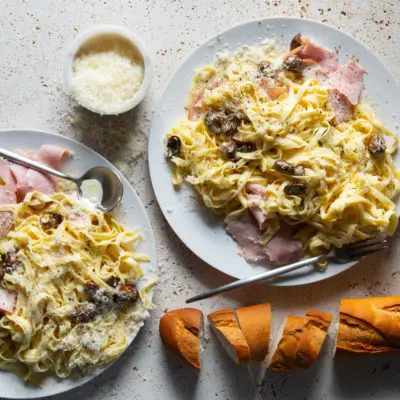

Recipe by: Noxolo Mohlakoana
Serves: 2
Difficulty:Easy
Prep Time:10 mins
Cooking Time:20 minutes
INGREDIENTS
- 1 cup cream
- ½ cup good quality chicken stock
- 80 g Parmesan, finely grated
- 200 g gammon or smoked ham, sliced
- 250 g portabellini mushrooms, halved and pan fried
- 250 g fettuccine, cooked al dente
- sea salt and freshly ground black pepper, to taste
COOKING INSTRUCTIONS
- Heat the cream and chicken stock in a saucepan over a medium heat.
- Simmer until reduced by half, then remove from the heat.
- Mix in half the Parmesan and sliced bacon.
- Add the pan fried portabellini mushrooms.
- Toss through cooked pasta. Sprinkle over the remaining Parmesan and season to taste.